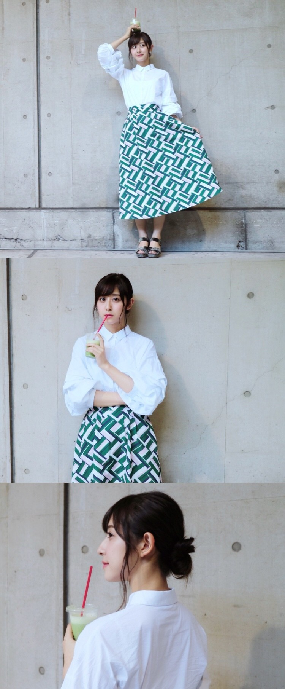
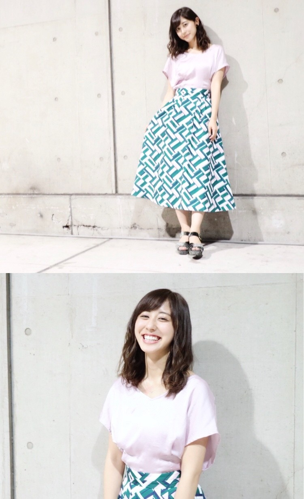
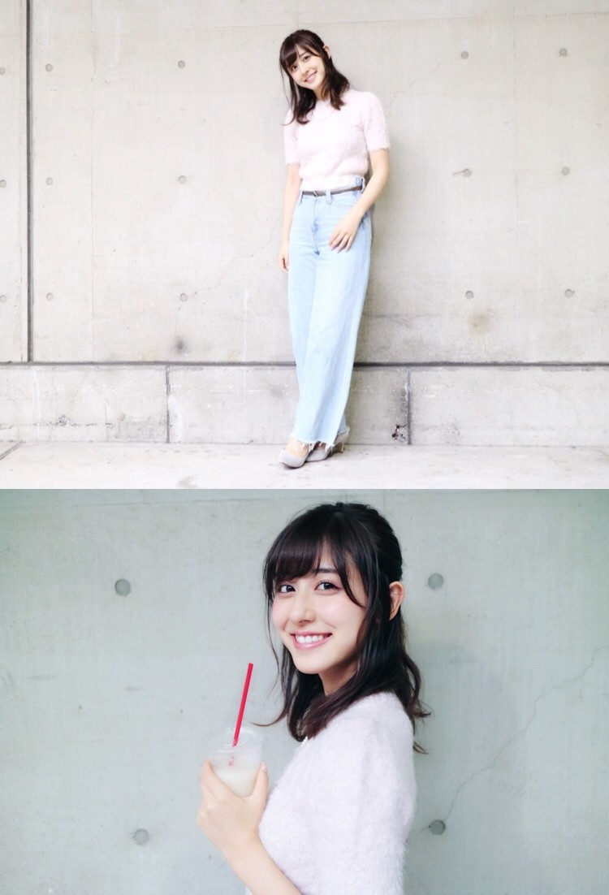
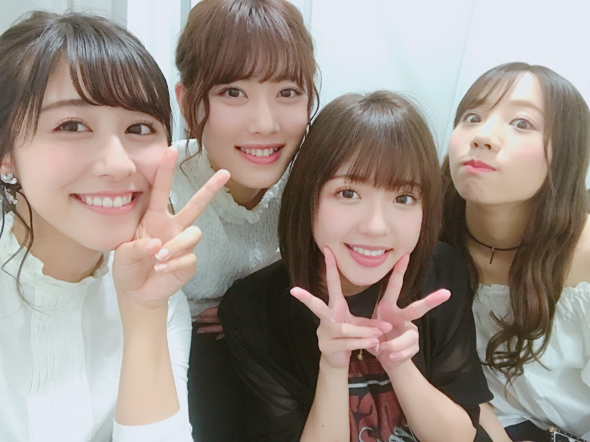

| 2017/09 28 Thu | 斎藤ちはる 私服と私服と私服と。 |
ちはるーむへようこそ
学校が始まって、バタバタな毎日を
過ごしております( ◦˙ ˙◦ )
皆さんはどうお過ごしですか〜？
個別握手会がパシフィコ横浜にて
2回行われたので、
その時の私服を皆さんに紹介します！
9/18
4部

tops: ZARA
skirt: Mila Owen
(with green smoothie)
hair: シニヨン(下の方のお団子)
シンプルな白シャツに見えて
実は袖に大きなフリルがついていて
ボリューミーなのがポイント！
今年の秋は袖にポイントがあるのが
流行りっていうのを聞いたことがある☺︎
5部

tops: Another Edition
skirt: Mila Owen
hair: 巻き下ろし
スカートは着まわし！
5部ではお姉さんぽく。
ピンクのトップスはサテン地だから
着心地も良いし、
甘々になりすぎないからいいね！
9/24
4部

tops: snidel
denim: Mila Owen
(with pear smoothie)
hair: 巻きハーフアップ
ふわふわモコモコのニットトップスは
半袖だから、秋の始まりの今に丁度いい気がする！
トップスが女の子っぽいから
デニムで、カジュアルダウンしたのがポイント。
5部
tops: Another Edition
denim: Mila Owen
choker: ZARA
hair: デコだし巻き下ろし
デニムは4部と同じだけど
全く雰囲気の違った、黒トップスにしてみました！
おデコを出して、チョーカーもすると
一気にクールになる☺︎
色んな自分になれるのって楽しいね！！
握手会でどんな格好をしようか...？
どんな髪型をしようか...？
と悩む時間が楽しくて好きです。
皆さんいつも会いに来てくださって
本当にありがとうございます！！
19thの握手会受付もだんだんと
始まってきています。
18thより部数が増えて嬉しく思いつつも、
少しだけ不安もあります...
沢山の方が会いに来てくださるのを
心からお待ちしています(> <)

＊「のぎ天2 #32」、9月29日から配信開始
今回はボードゲーム対決をしました。
笑顔が絶えなかったな〜
楽しかった♡
＊「MARQUEE Vol.123」10月10日発売
ずっとずーっと出たかった、
川後の連載についに出演します！
嬉しかった〜♡
私と川後にぴったり(!?)な
衣装やメイク、世界観なので...
是非チェックしてみてください。
明日はセブンライブ、
明後日は個別握手会、
どちらも名古屋です！
楽しみにしてます〜◎
斎藤ちはる